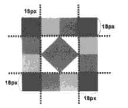
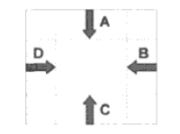

border-image:url(图像文件的路径) A B C D
-webkit-border-image：url(图像文件的路径) A B C D
-moz-border-image：url(图像文件的路径) A B C D
border-image属性值中至少必须指定五个参数，其中第一个参数为边框所使用的图像文件的路径
A、B、C、D四个参数表示当浏览器自动把边框所使用到的图像进行分隔时的上边距、右边距、下边距及左边距
如图:  